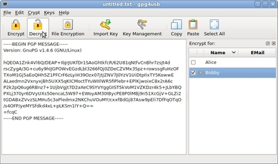
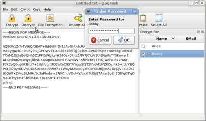

Cómo descifrar un texto
NOTA: Usted sólo puede descifrar textos si tiene una llave privada y el texto está cifrado con ella. Usted puede identificar las llaves privadas por la imagen 'manojo de llaves' que está delante del nombre en el listado de llaves (en este ejemplo es Bobby):

Hay cinco pasos para descifrar un texto. Suponemos que Bobby quiere descifrar un texto que está cifrado con su llave pública.
PASO 1: Copie el texto en la caja de edición de texto
Primero Boby copia el texto en la caja de edición de texto.

Hay veces que, al copiar el mensaje cifrado de un correo electrónico, las líneas de texto aparecen separadas por líneas en blanco. Si se intenta descifrar el texto tal como está nos saldrá un error. Para evitar esto, primero pulsar el botón 'Retirar espaciamiento' de la barra de herramientas y después seguir el Paso 2.

PASO 2: Escoger la llave(s)
Segundo, escoge su propia llave.

PASO 3: Descifrar el mensaje
Ahora,
Bobby pulsa el botón 'Descifrar' para descifrar el texto. Alternativamente, el podría
usar el atajo 'Ctrl+D' o usar el menú 'Cifrar - Descifrar'.
NOTA: Usted
sólo puede descifrar textos para los cuales tiene la llave privada. Las llaves privadas
son aquellas que tienen un icono 'llave' delante de su nombre en el listado de llaves.

PASO 4: Entre la contraseña
Ahora Bobby introduce la contraseña de su llave.

PASO 5: Leer el texto
Ahora Bobby puede leer el texto cifrado.